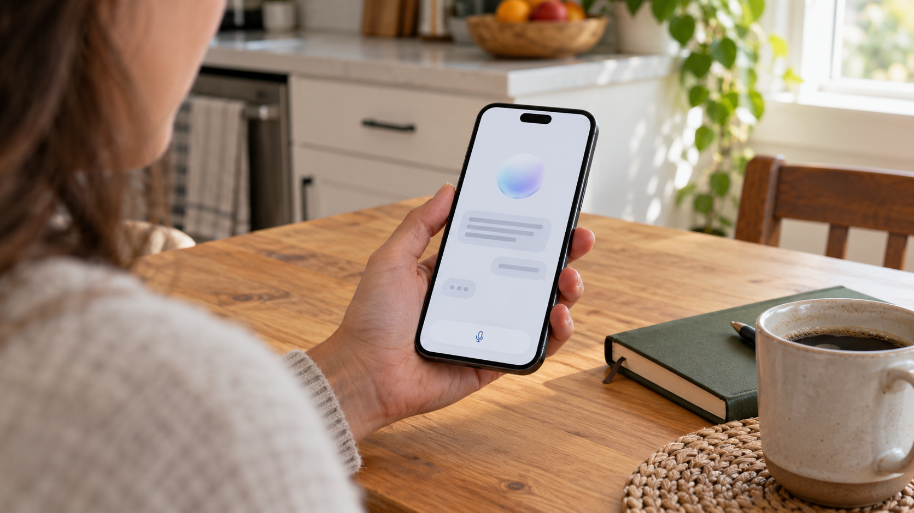

Meta’s Muse Passes 10 Million U.S. Downloads in Its First 40 Days
Sensor Tower estimates reported Tuesday put Muse at 10.2 million U.S. downloads, raising the question of lasting engagement.

Meta’s Muse reached an estimated 10.2 million U.S. downloads during its first 40 days, TechCrunch reported Tuesday, citing Sensor Tower. The new figures give investors a measure of early distribution for the company’s consumer AI push.
The report also put Muse at 2.5 million daily active users on October 16. Sensor Tower estimated that 23% of U.S. users returned after 14 days. These are third-party estimates reported by TechCrunch, rather than financial results or an audited disclosure from Meta.
Downloads and repeat use answer different questions
An installation shows that someone tried an app. It does not establish that the person continued using it, paid for it or moved spending away from another service. Daily activity and retention help address those separate questions, but each measure covers a different period and population.
Dividing the daily-user estimate by cumulative downloads would therefore produce a misleading retention calculation. A proper comparison needs a defined group of new users and a consistent interval after installation.
For AI assistants, repeated use also needs to become economically useful use. Completing a task can require computing resources and, depending on the service, outside tools or human oversight. As with the economics of deploying AI agents at work, activity alone cannot establish a return.
A personal agent creates a different measurement problem
Meta introduced Muse on September 8 as an assistant that can act across connected services, rather than only return conversational answers. Its launch announcement describes a dedicated cloud computer with a browser, user-controlled connections and approval requests before sensitive actions. Those are the company's product descriptions, not independent findings that every task succeeds or that the safeguards eliminate risk.
The distinction changes how engagement should be interpreted. A person may give an agent an instruction and leave it working in the background. Time spent looking at the app can then fall even when the service remains useful. Conversely, frequent openings could reflect repeated corrections. Evaluating a task-performing assistant therefore requires completion rates, the amount of supervision needed and whether users return for another useful task, alongside ordinary app activity.
Meta says people can communicate with Muse through its app or WhatsApp. That introduces another boundary around mobile-store download estimates: installations measure one distribution channel, while an assistant can also be reached through an existing messaging service. The reported U.S. installation total should not be described as a complete count of everyone who has interacted with Muse across all interfaces.
Permission also affects adoption. Connecting an email account or authorizing a purchase is a different decision from downloading a free application. A funnel that distinguishes installation, account creation, connection of a service and successful task completion would reveal where people find value or encounter friction. The available download figures do not disclose that entire funnel.
For Meta, distribution and monetization remain separate questions. A large existing audience can provide places to introduce a product, but it does not make the computing, support and security work free. In a hypothetical comparison, two assistants with equal daily audiences could have very different costs if one mainly answers short questions and the other runs long browser sessions. No cost-per-user estimate for Muse can be calculated from the installation and retention figures reported here.
What investors still need to see
The commercial test is whether a consumer assistant becomes a habit that supports a durable business. That could involve paid features, transactions or other forms of monetization, but the download figures do not establish any particular outcome.
A meaningful assessment would pair sustained engagement with revenue and the cost of serving those users. Strong distribution could lower the difficulty of introducing a new product, while leaving that second part of the business model unresolved.
The latest estimates strengthen the case that Muse has attracted an audience. Whether that audience becomes a profitable business will require evidence beyond the launch-period download count.
Sources and methodology
Sources checked October 20, 2026. Reported figures are attributed above; explanations of their business implications are editorial analysis. The generated cover is illustrative.